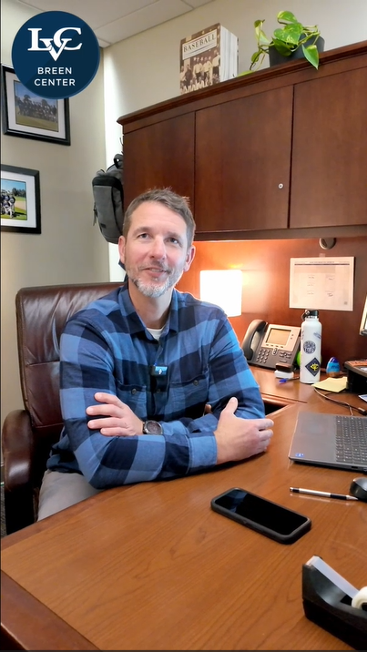

LVC Social Media Interviews
Video content created for Lebanon Valley College's social media


These videos were produced during my internship as part of an interview series for the Breen Center’s Instagram account at Lebanon Valley College. The series featured staff members sharing their career paths and experiences.
When first assigned this project, I had limited experience with video editing. After an initial introduction from a coworker, I quickly built proficiency using DaVinci Resolve. I edited footage by adding background music, images, and transitions while also focusing on audio balancing and color correction to ensure a polished, professional final product.
Despite being new to this type of work, I successfully met my supervisor’s expectations and delivered content suitable for public-facing social media. This project introduced me to video storytelling and sparked an ongoing interest in video editing.